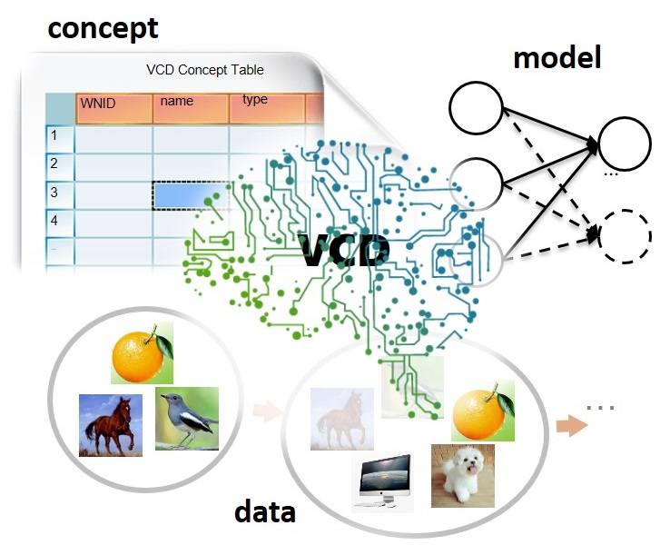
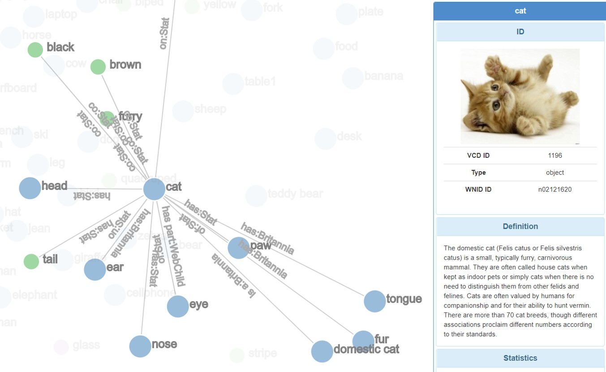
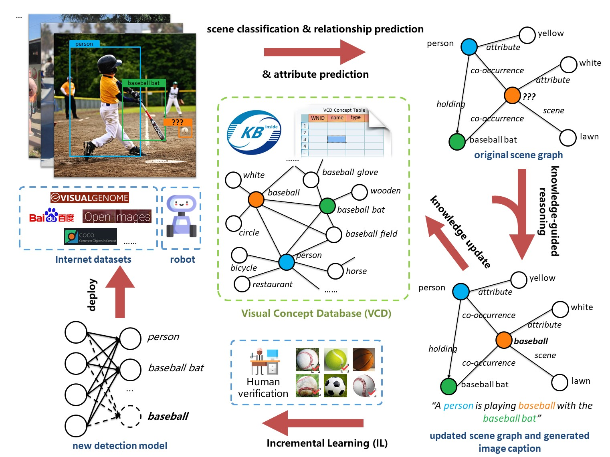
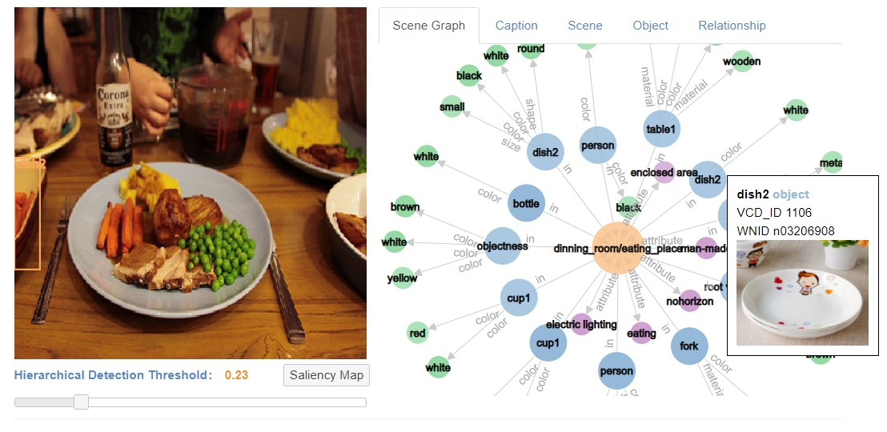

Visual Concept Database (VCD)

Visual Concept Database (VCD) is a visual knowledge graph (compared to usual semantic knowledge graphs). At the same time, it is also a lifelong learning system.
{kind=link}
The logo of VCD: the data, the concept, and the model can be updated
As a visual knowledge graph, it is constituted by visual concepts and relationships. There are 4 types of visual concepts: object, object attributes, scene, and scene attributes. Among them, there are different kinds of relationship such as semantic relationship (e.g. a tiger is a carnivore), co-occurrences (e.g. a computer mouse usually co-occurs with a desktop computer), attributes (e.g. zebras has stripes) etc whether mined from images or extracted from existing semantic knowledge bases.
{kind=link}
The knowledge graph visualization page in VCD
As a lifelong learning system, the data accumulate endlessly, from which more visual concepts can be added, and the model can incorporate these knowledge to perform better. For example, the model can recognize more object categories. Or if the model has not seen an ergonomic computer mouse before, by observing that such a black mouse-like mouse co-occurs with the keyboard and the computer screen, it can deduce that it is likely to be a computer mouse. The pipeline below depicts the overall pipeline of VCD which is indeed a cycle, indicating that it can evolve endlessly.
{kind=link}
The overall pipeline of VCD
In the following figure, we show a demo of VCD which shows that VCD can comprehensively analyze an image by manipulating all modules such as object detection, scene classification etc.
{kind=link}
Comprehensive analysis of certain image in VCD